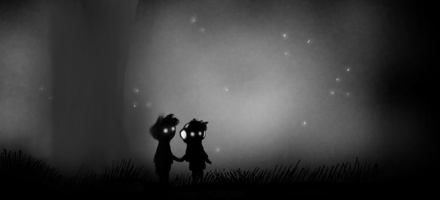

Nos sonhos da cidade Sobre o jogo
por Paulo Diovani Gonçalves“Nos sonhos da cidade” é a minha participação no FVM2014.
É um RPG de narrativa compartilhada e construção coletiva de cenário onde os jogadores criarão uma visão obscura de sua própria cidade (ou cidades), transformando lugares conhecidos e acontecimentos recentes de seu meio em cenário e desafios para se divertirem.
Como você descreve o jogo que criou?
Esta pergunta é uma das exigências do FVM2014 e deve ser respondida com um máximo de 300 caracteres.
A minha descrição está a seguir.
Um jogo narrativo sobre problemas que afetam cidades reais, retratados de forma obscura, caricata ou até distorcida, num sonho, onde o sonhador é a própria cidade.
Utiliza cartas de pôquer para criar a cidade a ser explorada e definir dificuldades, e dados para testar habilidades dos personagens.
Temas e meta escolhidos
Além da pergunta acima, o concurso exige a escolha de três temas, ou dois temas e uma meta alternativa de design.
Eis as minhas escolhas.
Temas
Doença
A doença que abala a cidade, aqui, são os problemas e notícias recentes que são convertidos em Pesadelos, no sonho, pelos jogadores.
Edificações
Prédios, parques, avenidas, etc. Areas das cidades que são transportadas para o universo do sonho e distorcidas para combinar com os elementos deste.
Meta alternativa de design
O Limite é Tênue: Crie um jogo no qual os fatores externos a mesa (dia da semana, condição do clima, notícias recentes, flutuação da bolsa, etc.) influenciam significativamente nas mecânicas e na narrativa. Tente buscar referências nos jogos de realidade aumentada (ARGs), mas focando sempre na narrativa analógica.
Usei esta meta na construção da Cidade e dos Pesadelos, com o propósito de trazer lugares e problemas reais para o jogo. Esta construção não é presente apenas no início de um jogo, mas no início de cada nova sessão.
Inspirações e referências
Minhas insírações para a criação deste jogo, que também podem servir de inspiração para mestres ensandecidos que desejem testar meu jogo.
A maioria são inspírações visuais para retratar os sonhos, mas algumas foram ideias para a concepção e até mesmo regras.
Quadrinhos
- Sandman — em especial uma história que não consigo lembrar o nome, que fala justamente do sonho de uma cidade. Esta é, assumidamente, minha primeira e maior inspiração.
Filmes
- Dark City (1998)
- Inception (2010)
- Silent Hill (2006)
- Sin City (2005)
- Sucker Punch (2011)
Games
- Legend of Mana — de onde veio a ideia do mapa da cidade criado pelos jogadores.
- LIMBO — quem não conhece este jogo, pára o que estiver fazendo, compre e jogue. E não esqueça de apagar as luzes do quarto.
- Silent Hill
Outros RPGs
- Busca Final
- Este Corpo Mortal

créditos da imagem: Limbo, by Lemonchipz
 Nos sonhos da cidade por Paulo Diovani Gonçalves está licenciado sob uma Licença Creative Commons Atribuição - Não comercial - Compartilhamento pela mesma licença 4.0 Internacional.
Nos sonhos da cidade por Paulo Diovani Gonçalves está licenciado sob uma Licença Creative Commons Atribuição - Não comercial - Compartilhamento pela mesma licença 4.0 Internacional
Nos sonhos da cidade por Paulo Diovani Gonçalves está licenciado sob uma Licença Creative Commons Atribuição - Não comercial - Compartilhamento pela mesma licença 4.0 Internacional.
Nos sonhos da cidade por Paulo Diovani Gonçalves está licenciado sob uma Licença Creative Commons Atribuição - Não comercial - Compartilhamento pela mesma licença 4.0 Internacional